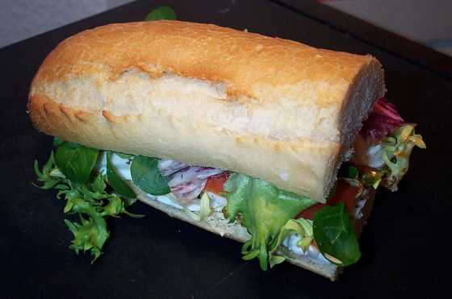
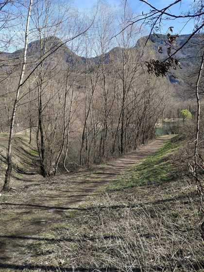
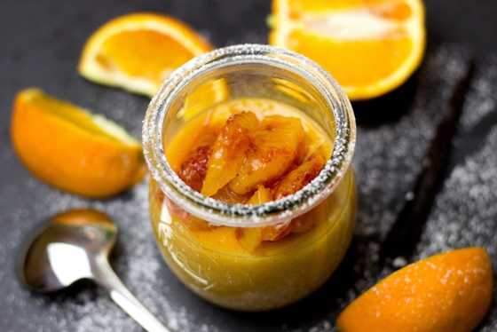
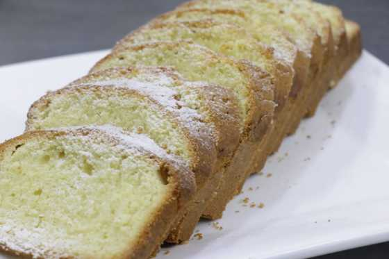
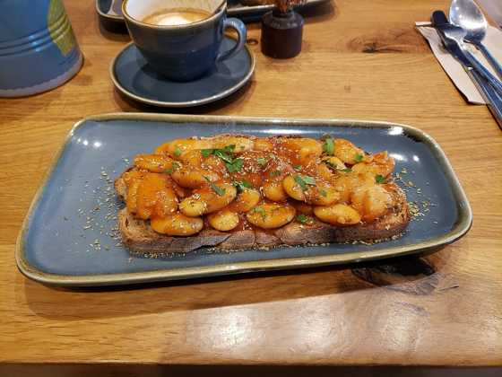
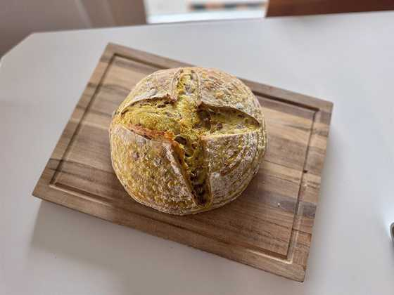
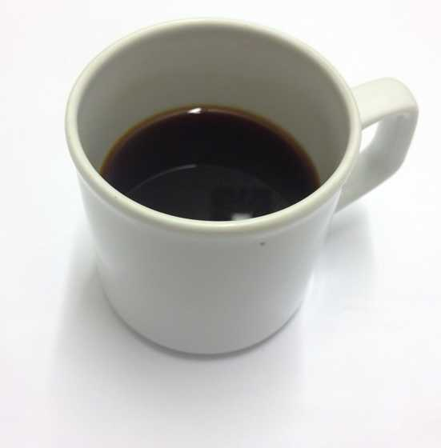

鹿児島県薩摩川内市・中郷
公園のとなりで、
手づくりのごはんとおやつを、ひと息ぶん。
ごはんの日も、おやつの日も。パンも具も手づくりの、やさしい一皿をめざすお店です。
写真はフリー素材のイメージです。店舗の実際の様子・提供内容そのものではありません。実際の写真はご提供のものに差し替えます。
お店の由来・想い
ごはんの日と、おやつの日がある店。
「ごはんとおやつ syuO(シュオ)」は、2020年2月に薩摩川内市中郷にオープンしました。火扇児童公園(ひおうぎ公園)のそばにあります。
ラジオ局の紹介では、月曜から木曜は「ごはんとおやつ」、土曜は「おやつと飲みもの」と、曜日で内容が分かれていると案内されました。紹介記事には、オーナーの「あたたかな思いやり」がメニューや空間に感じられるとあります。
サンドイッチはパンも具材も手づくり、コーヒーには同じ市内の喫茶店「PATIO(パティオ)」の珈琲豆を使っているとのことです。
情報源: FMさつませんだい(紹介記事)/FMさつませんだい 開店告知/Instagram
店名の意味は確認できていません。見出しなどの言い回しは制作側の表現です。曜日・提供内容は開店当時の案内で、現在は異なる場合があります。

ごはんとおやつ
その日のおなかに合わせて、えらべる。
ごはんの日
紹介では、手づくりのサンドイッチが挙げられています。
- 手づくりサンドイッチ
- ドリンク(PATIOの珈琲豆を使用と紹介)
おやつと飲みものの日
紹介では、次のおやつが挙げられています。
- コーヒーゼリーぜんざい
- シフォンサンド いちご
価格・内容は準備中です。最新のメニューはInstagramでご確認ください。









飲みもの
市内の喫茶店の豆で、一杯。
コーヒーには、薩摩川内市永利の喫茶店「PATIO」の珈琲豆を使っていると紹介されています。地元のつながりも、お店の味の一部です。



口コミ
こんな声が届きそう、というイメージ。
公園を眺めながら、サンドイッチをゆっくりいただきました。パンがやさしい味でほっとします。
おやつの日に伺いました。甘さがほどよくて、コーヒーとの相性もよかったです。
ひとりでも入りやすくて、ちょっとした休憩のつもりが長居してしまいました。
上記は制作側が作成したイメージ例で、実在のお客様の声ではありません。
アクセス
お店のこと(確認できたものだけ)
| 所在地 | 〒895-0072 鹿児島県薩摩川内市中郷２丁目８−３４ |
|---|---|
| 電話 | 準備中 |
| 営業時間 | 準備中 |
| 定休日 | 準備中 |
| 価格 | 準備中 |
| @gohan.to.oyatsu_syuo |
営業時間・定休日は情報源により異なるため掲載していません。お出かけ前にInstagramをご確認ください。
写真クレジット
使用した写真
すべてフリー素材(Wikimedia Commons等)で、撮影地は国外または不明です。
- sandwich-baguette: 「Baguette 02」 Johann from Munich, Germany / CC BY 2.0 / 出典
- sandwich-seed: 「Sandwich with cucumber and cheese」 Flygklubben / CC BY-SA 4.0 / 出典
- coffee-black: 「White cup of black coffee」 Jon-Isac Lindberg / CC0 1.0 / 出典
- coffee-beans: 「Coffee beans」 FOCA Stock / CC0 1.0 / 出典
- coffee-cake: 「Coffee and coffee cake (Unsplash)」 Stephanie McCabe / CC0 1.0 / 出典: Wikimedia Commons
- jar-dessert: 作者記載なし(rawpixel掲載) / CC0 1.0 / 出典: rawpixel(Wikimedia Commons経由)
- latte-wood: 「The cup of coffee on a wooden table (47939081677)」 Artem Beliaikin / CC BY 2.0 / 出典
- pound-cake: パウンドケーキ Jackson Monichan / CC0 1.0 / 出典: WordPress Photo Directory
- cheesecake: チーズケーキ Andy Li / CC0 1.0 / 出典
- toast-beans: 「Beans on toast - Vios 2024-01-09」 Andy Li / CC0 1.0 / 出典
- path-trees: 「Tree-lined path」 Giovanni Ussi / CC BY-SA 4.0 / 出典: Wikimedia Commons
- toast-butter: 「Toasted oatmeal bread with butter and apple butter - Massachusetts」 Daderot / CC0 1.0 / 出典
- sourdough: 「Sourdough bread - January 2026 - Sarah Stierch 02」 Missvain / CC0 1.0 / 出典
- wood-planks: 「Weatherworn planks on top of wooden table」 W.carter / CC0 1.0 / 出典